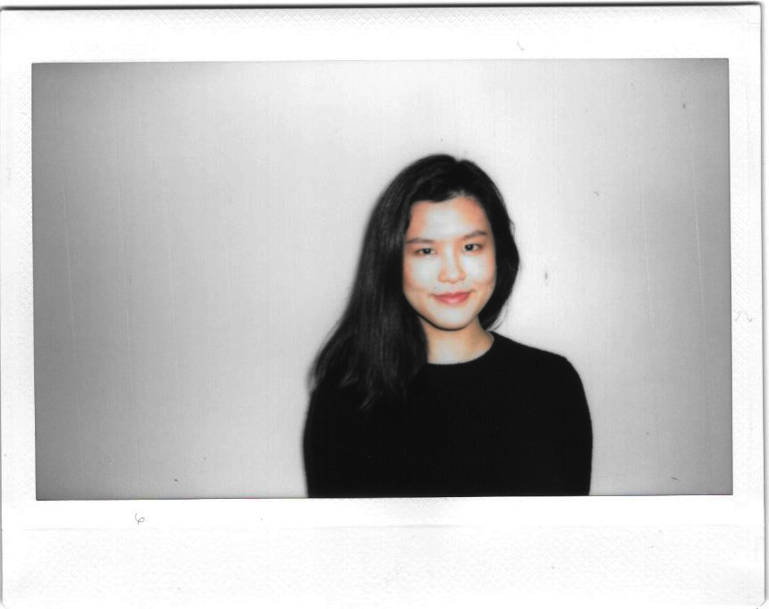

 Patlapa Davivongsa is a graduate candidate of the Dynamic Media Institute at Massachusetts College of Art and Design. Her interests lay on the intersection of user experience and human interaction to their surroundings in the current developing world. She received her Bachelor of Science degree in Architectural Design from Chulalongkorn University, Bangkok in 2014, from which her interest of space derived. In conjunction with architecture and digital media works, Davivongsa is also a co-producer, a bassist, and an occasional vocalist of the band 'New Mandarin', which they have just released their first EP in 2015.
phone: 857 210 6224
////////////////////////////////////////////////////